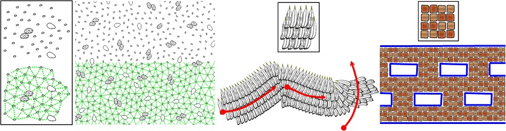

An Example-based Procedural System for Element Arrangement

Abstract
We present a method for synthesizing two dimensional (2D) element arrangements from an example. The main
idea is to combine texture synthesis techniques based-on a local neighborhood comparison and procedural
modeling systems based-on local growth. Given a user-specified reference pattern, our system analyzes neighborhood
information of each element by constructing connectivity. Our synthesis process starts with a single
seed and progressively places elements one by one by searching a reference element which has local features
that are the most similar to the target place of the synthesized pattern. To support creative design activities, we
introduce three types of interaction for controlling global features of the resulting pattern, namely a spray tool,
a flow field tool, and a boundary tool. We also introduce a global optimization process that helps to avoid local
error concentrations. We illustrate the feasibility of our method by creating several types of 2D patterns.
Information
Materials
Takashi Ijiri, Radomir Mech, Gavin Miller, Takeo Igarashi: An Example-based Procedural System for Element Arrangement. Computer Graphics Forum. 27, 2, pp. 429-436. (In Proc. of Eurographics 2008), 2008.